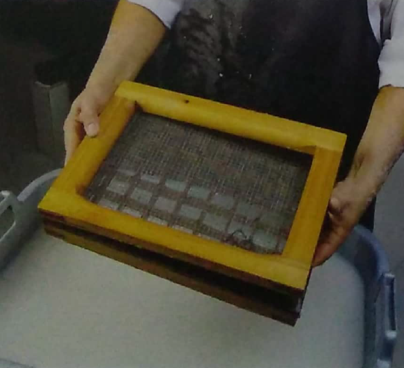
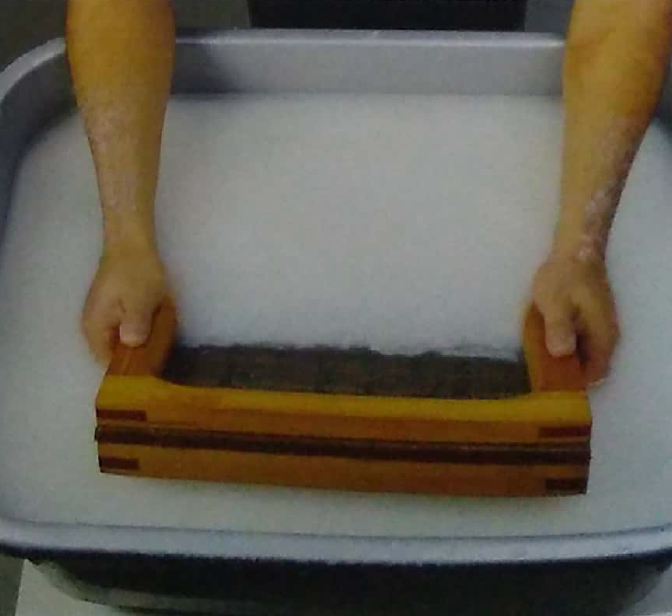
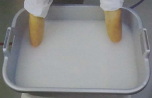
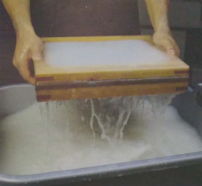
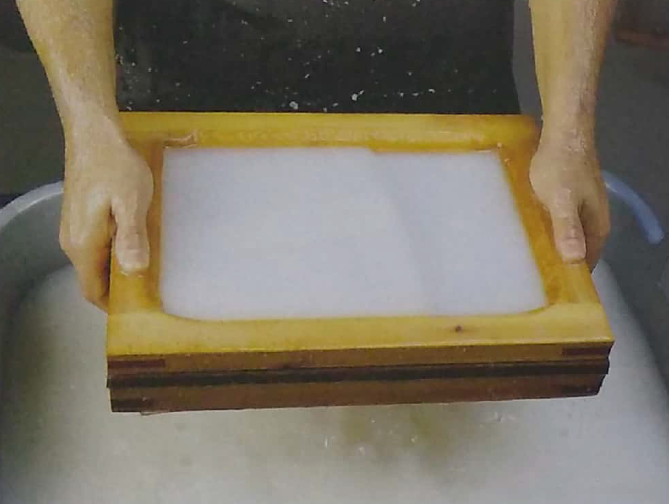
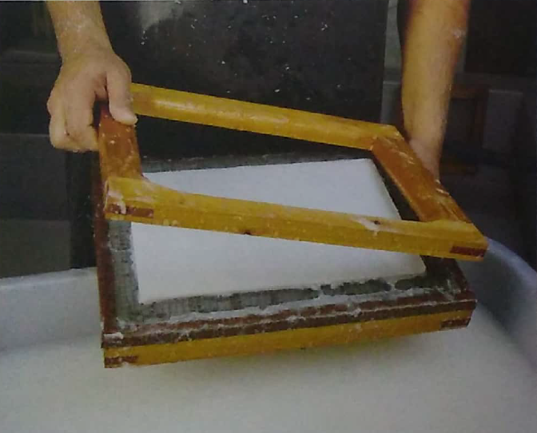
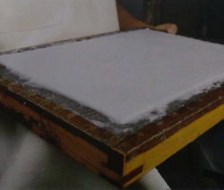

A arte de fazer papel não mudou muito nesses mais de 2000 anos desde que se era produzido na China, sendo atualizada e levada ao ofício em massa através de maquinário especializado, entretanto as etapas e processos se mantiveram dado sua simplicidade. Devido a isto, estar atualizado nos materiais necessários para produzir a oficina e determinar o escopo que buscamos produzir se torna essencial.
Para tal, dividimos na aba MATERIAIS todos os itens que serão utilizados e que devem ser adquiridos ou montados para o prosseguirmos com nossas etapas. Tão importante quanto é ressaltar que a criatividade e a imaginação são excelentes ferramentas para nos auxiliar a confeccionar papéis diferentes, elaborar estratégias novas, melhorar a produção e criar resultados cada vez mais interessantes.
Agora que estamos com todos os recursos em mãos, podemos começar a oficina. Dividindo em três principais etapas mostraremos todos os processos realizados para o fabrico do papel de modo artesanal, com o auxílio de ./images, recomendações e resultados esperados. Recomendamos a pesagem e anotação na quantidade de material e água utilizados durante todos os processos para se ter com precisão os gastos, lucros e desperdícios durante a oficina.
É importante ressaltar, que o número adequado de membros para uma oficina varia, mas o ofício não necessita muitas pessoas. Tendo um número grande de mais de 12 funcionários pode ser prejudicial dado a possível dispersão dos envolvidos pela falta de atividades a serem realizadas por todos em diversos momentos.
1ª Etapa: Preparação da pasta
Antes de iniciar os processos de produção, é necessário determinar qual fibra será utilizada e, portanto, consultar os materiais necessários para tal além de pesar a seco o produto para calcular quanto material se está utilizando. Cada fibra exige uma etapa prévia:
Sendo a fibra primária (plantas), será necessário: panelas inoxidáveis, medidor de pH, equipamentos de segurança (luvas, aventais e máscaras), um fogão, além dos agentes químicos; hidróxido de sódio em lâminas (para fibras mais resistentes) ou carbonato de sódio em pó (para fibras mais frágeis). Deverá ser retirado o máximo de conteúdo excedente e desnecessário possível e picotar o material o desfibrando para então tratar a fibra em um solução com água quente e a soda cáustica (hidróxido de sódio ou, dependendo do caso, carbonato de sódio). A quantidade de soda a por quantidade de água e fibra não deve ser e muito grande, já que o processo tem como fim isolar fibra de materiais excedentes. Deve-se tomar cuidado com a solução, algumas fibras primárias podem resultar em um líquido escuro tóxico que deve ser armazenado e descartado adequadamente enquanto a fibra resultante deve ser deixada para secar durante a noite. Cuidado com moscas e outras pragas, pois estamos lidando com material 100% orgânico que pode exalar um odor e apodrecer, então não se pode armazenar por muito tempo, mas caso necessário seu armazenamento deverá ser em local arejado e bem ventilado. Por fim se recomenda uma nova pesagem do material para anotar quanto material desfibrado se têm.
Sendo a fibra secundária (trapos e papéis reciclados), não haverá a necessidade desses itens para produção da pasta. Apenas um recipiente para homogeneizar a cola (como uma tina), baldes e recomenda-se o uso de fibras de qualidade baixa como o Jornal. A fibra secundária deve ser picotada (desfibrada) e então submersa sob um balde até estar bastante hidratada. Após desfibrar e selecionar com qual material se deseja trabalhar, será necessário refinar cada uma em uma refinadora/pia holandesa ou, mais provavelmente, em um liquidificador. Para não forçar o motor do liquidificador, recomenda-se que coloque aos poucos a fibra e preencha o resto com água, então se coloca o material refinado numa peneira com uma silk screen e a espreme para sair toda a água. A quantidade de tempo no liquidificador variará de acordo com a espessura desejada; 15 segundos resultaram numa pasta mais rústica e uma folha mais grossa enquanto 40 segundos fornecerão um material mais delicado. Lembre-se de não misturar e evitar contato das pastas com sujeiras ambientes, sempre as tampando ou cobrindo quando forem armazenadas. A mesma pode ser armazenada por semanas, mas se o ambiente foi quente e úmido pode estragar. Não esquecer de lavar os materiais e, se possível, calcular a quantidade de água e materiais utilizados.


2ª Etapa: Formação da folha
Agora que temos a pasta preparada poderemos começar a etapa mais delicada de toda a oficina, a formação da folha. Entretanto, antes de começarmos a “puxar papel”, é importante encharcar os buréis (panos e feltros) em uma tina separada assim como quaisquer materiais que se decida acrescentar ao papel (como pétalas e outros enfeites).

Enquanto nossos buréis são encharcados, enchemos uma nova tina com pelo menos 25cm de água, dispondo a pasta em seguida para homogeneizarmos a cola e corantes caso decidam por produzir um papel colorido. A cola papeleira é muito boa e econômica, mas podemos usar colar de látex ou até mesmo celulósica como a mucilagem do quiabo cozido. Para nos certificarmos que o material está bem homogêneo se recomenda o uso de uma batedeira caseira por toda a tina, mas mexer com as mãos ou um pedaço de pau terá o mesmo efeito.


Com a pasta homogênea e colorida, deixamos ela descansando por um tempo enquanto enchemos outra tina com 25cm de água. Esta será a tina que utilizaremos para puxar o papel e o objetivo de enchermos uma nova tina com água é para controlarmos a quantidade de pasta que queremos diluir e assim definirmos melhor a gramatura da folha. Aqui exigirão algumas tentativas para definirmos qual será o padrão desejado.

“Puxando o papel”
A seguir estarão uma seleção de ./images indicando cada um dos passos a serem seguidos para se formar a folha.
1. A forma e o marco devem estar perfeitamente alinhados para que os papéis não saiam torcidos e deformados.

2. Submergimos o molde na tina, introduzindo-o por um lado.

3. O levamos até o fundo para coletarmos o máximo de fibra possível.

4. Retiramos o molde da tina para que a água seja drenada pela malha, mantendo apenas a pasta. Este processo deve ser realizado de modo rápido e com firmeza para não desconfigurar o alimento entre a forma e o marco.

5. Enquanto ocorre a drenagem da água, deve-se fazer um movimento suave de vaivém para que a folha fique num formato uniforme. Ao visualizar que o excesso de água foi drenado, visto pelo brilho da pasta, se interrompe o movimento para não partir a estrutura bem distribuída.

6. Retirar o marco é um processo delicado, pois ele produz gotas que podem cair na pasta, perfurando-a causando defeitos muito visíveis na folha quando seca. Para tal, recomendamos que incline um pouco o molde na diagonal para se retirar um o excesso de água até que ela comece a gotejar. Em seguida se retira o marco com firmeza em um único movimento.

7. Após retirarmos o marco, podemos visualizar a espessura da folha e calcular que agora ela está de 4 a 5 vezes maior que sua espessura final.

“Colocando a folha”
Aqui estaremos dispondo a folha do molde para os buréis.
1. Colocamos os buréis (feltros ou panos) em uma superfície lisa, reta ou pouco convexa. Pode-se começar com pares para maior firmeza. Em seguida, assegurando que o molde ficará centralizado, apoiamos um de seus lados no burel.


2. Devemos deixar o molde cair no burel de forma natural, como se fechássemos uma porta e então apertar bem para que a pasta se fixe no burel.


3. Depois de firmado, se teria o molde no mesmo movimento que o colocou. Tenha em mente que se tudo for feito com um golpe ou jogado há a possibilidade de danificar a folha.

4. Logo em seguida se posiciona um novo par de buréis acima da folha posta. Caso decida por continuar a colocar a folha em uma pilha, o processo vai se tornando cada vez mais delicado. Portanto recomendamos separa um espaço para colocar a folha e um para colocar a pilha.

Prensagem
Chegamos à parte final desta etapa, prensar a pilha de folhas. O ideal será empilhar os buréis com as folhas e centralizar na prensa acima de uma área com escoamento de água. Projetando madeiras resistentes para aproximar a prensa da pilha, se necessário, e então pressionar as folhas. O processo é rápido e nosso objetivo é eliminar boa parte da água dos buréis e das folhas, assim. Assim que parar de sair água se afrouxa a prensa e passamos para terceira etapa.


3ª Etapa: Secagem e acabamento
Este é o cenário final para termos nossos papéis prontos. Agora que os buréis foram prensados para tirar os excessos de água das folhas ao máximo precisamos passar para a secagem.
Dependendo da gramatura das folhas se tornará extremamente difícil retirar as mesmas ainda úmidas dos buréis sem que elas rasguem, mas se possível e com muita delicadeza elas podem ficar dispostas em um varal em ambiente ventilado e arejado com pequenos papéis onde os pregadores as segurarão. Caso contrário, é possível pendura-las nos varais ainda com os buréis.


Outro modo é deixar as folhas secando com o tempo, todas espalhadas em superfícies lisas durante o tempo ou até mesmo deixando elas próximas de um ventilador.

Depois de secas, as folhas devem ser desprendidas dos buréis. Importante ressaltar que, enquanto uma folha é desprendida por alguns artesãos, outros devem fazer a higiene do local e lavagem e secagem dos buréis e materiais utilizados.
Para desprendermos as folhas serão necessárias algumas puxadas dos buréis em uma direção e depois noutra direção. As folhas se soltarão e poderão ser coletadas e separadas dos mesmo.


Para finalizar, caso muitas de suas folhas fiquem amassadas e enrugadas, podemos fazer uma prensagem a seco para as alinhar. Distribuindo um número igual de folhas em tábuas de madeira numa pilha consistente, podemos

E com isto terminamos nosso passo-a-passo para realização de uma oficina de papel artesanal. Foi possível visualizar o quão simples é esta arte milenar que, ao longo dos anos, não mudou muito suas técnicas e processos, apenas substituindo o artesanato por processos automáticos industriais.
Agora que temos todo esse conhecimento qualquer um está habilitado a fazer a própria oficina e repassar o conhecimento desta arte apaixonante para o próximo.
Como dito previamente, o livro base que nos forneceu todo este conhecimento foi o livro “O PAPEL TÉCNICAS E MÉTODOS TRADICIONAIS DE FABRICO”, escrito por Josep Asunción. Caso queiram explorar mais a fundo novas técnicas, estratégias, resolver possíveis problemas e absorver novos engenhos relacionados a oficina, a consulta ao livro base se provará incrivelmente recompensadora.